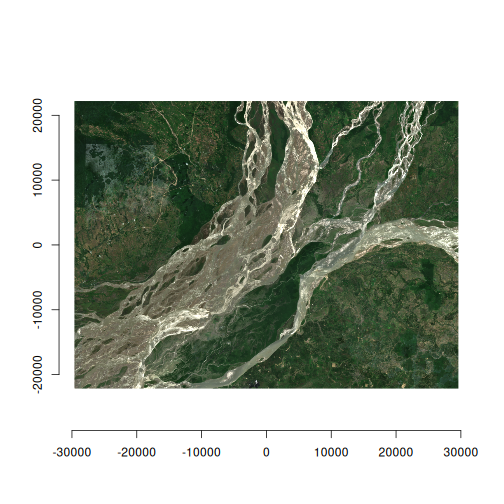

Copernicus Data Space Ecosystem Sentinel-2
Source:vignettes/cdse-sentinel-2.Rmd
cdse-sentinel-2.RmdThe Copernicus Data Space Ecosystem (CDSE) provides access to a large range of European Space Agency (ESA) and Copernicus data. They also provide a STAC API for querying and accessing the data. However, there are some unique aspects to working with the CDSE via gdal - firstly that authentication is a bit unique and secondly (and most critically), the Sentinel-2 data is stored in the Jpeg2000 format, rather than the more common Cloud Optimised GeoTIFF (COG) format. This has a couple of disadvantages, the main one being that, as the files aren’t cloud optimised, we often have to download more than we need to, there is also no embedded metadata describing values such as nodata, scale and offset.
But we can still make good use of these data so let’s get to it. Firstly here are some handy links:
CDSE STAC catalog:
https://browser.stac.dataspace.copernicus.eu/?_language=en&.language=en
CDSE STAC API documentation:
https://documentation.dataspace.copernicus.eu/APIs/STAC.html
CDSE API quota:
https://documentation.dataspace.copernicus.eu/Quotas.html
Authentication.
Get the official authentication documentation here.
You will need a CDSE account to access the data. Get yourself one from here.
Once, you’re registered, navigate to the S3
credentials page and create an “access key” and a “secret access
key”. Then Save these keys in your .Renviron file as
CDSE_ACCESS_KEY and CDSE_SECRET_KEY
respectively.
Set up the environment
first we need to load vrtility and then set up parallel processing. You must not set more than 4 daemons, as this is the limit for concurrent requests to the CDSE API.
Query the STAC API
We can now query the STAC API for the Sentinel-2 data. Here we are looking at the level-2A data which is orthorectified bottom-of-atmosphere reflectance.
We define our bounding bounding box (located in Assam, India) using {gdalraster} for convenience and also create a copy in a local projection system - we’ll use this later to warp the data to a common projection.
We’ll query the data for the month of June 2025, select the bands we want to download (here we’re grabbing, blue, green, red, near-infrared and the scene classification layer), and finally filter the results to only include images with a maximum cloud cover of 30%.
bbox <- gdalraster::bbox_from_wkt(
wkt = "POINT (95.415 27.78)",
extend_x = 0.3,
extend_y = 0.2
)
bbx_proj <- bbox_to_projected(bbox)
# run the STAC query
s2copdse <- stac_query(
bbox = bbox,
stac_source = "https://stac.dataspace.copernicus.eu/v1",
collection = "sentinel-2-l2a",
start_date = "2025-06-01",
end_date = "2025-06-30"
) |>
rstac::assets_select(
asset_names = c("B02_10m", "B03_10m", "B04_10m", "B08_10m", "SCL_20m")
) |>
stac_cloud_filter(max_cloud_cover = 30)Download and create a “cloud-free” median composite
Now we have our STAC query, we can create a
vrt_collection object which encapsulates all the image
assets as VRT datasets. Note that we need to set some GDAL environment
variables. For more details on the significance of these variables see
the GDAL vsis3
documentation. We then need to add important metadata to the VRT
files including the nodata, scale and offset values.
Next we apply a mask to the data using the scene classification layer (SCL) to remove cloudy pixels. this isn’t a perfect mask but it is a good start (more on that to come in the future).
Then we create a collection of virtually warped VRTs, which are
aligned to a common spatial reference system (SRS) and resolution. This
is done using the vrt_warp function and we specify the
target SRS, the extent of the data and the target resolution.
The next step requires us to stack the collection (essentially combining each band from across epochs), we can then set a pixel function to calculate the median value for each pixel across the stack.
Finally, we compute the median composite using the
vrt_compute function, which writes the output to a file. We
use the gdalraster engine to process the data in parallel
across bands and image tiles.
# Download the data and process
s2_median <- vrt_collect(s2copdse,
gdal_config_opts(
AWS_VIRTUAL_HOSTING = "FALSE",
AWS_ACCESS_KEY_ID = Sys.getenv("CDSE_ACCESS_KEY"),
AWS_SECRET_ACCESS_KEY = Sys.getenv("CDSE_SECRET_KEY"),
AWS_S3_ENDPOINT = "eodata.dataspace.copernicus.eu"
)) |>
vrt_move_band(1, 5) |>
vrt_set_nodata(0, band_idx = 1:4) |>
vrt_set_scale(scale_value = 0.0001, offset_value = -0.1, band_idx = 1:4) |>
vrt_set_maskfun(
mask_band = "SCL_20m",
mask_values = c(0, 1, 2, 3, 8, 9, 10, 11),
drop_mask_band = TRUE
) |>
vrt_warp(
t_srs = attr(bbx_proj, "wkt"),
te = bbx_proj,
tr = c(10, 10)
) |>
vrt_stack() |>
vrt_set_py_pixelfun(median_numpy()) |>
vrt_compute(
outfile = fs::file_temp(ext = "tif"),
engine = "gdalraster"
)Visualise the results
Finally, let’s plot the NIR band on its own and then the RGB composite.
plot_raster_src(s2_median, bands = 4)
plot_raster_src(s2_median, bands = c(3, 2, 1))